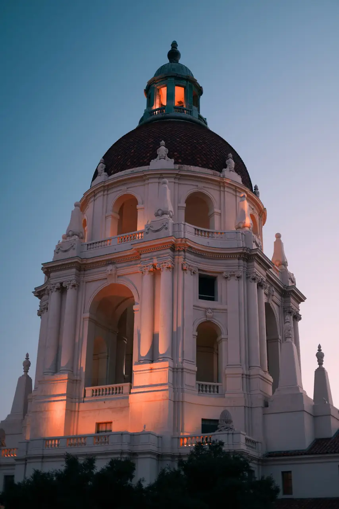

Pasadena: Old Town, Arroyo & Rose Bowl
· By GoldenPath Guide Editorial Team
Set at the foot of the San Gabriel Mountains, just ten miles northeast of downtown Los Angeles, Pasadena is best known for the Rose Parade and the Rose Bowl — the two traditions that ring in every new year. But behind that parade-and-football legend lies a quieter, more refined city of world-class museums, beautiful gardens, polished shopping, and a fiercely good dining scene. It is the perfect place to exhale from the big-city rush. In the long afternoon light the streets go quiet and gold, and the shingled roofs of Old Town glow like something out of a picture book.
Architecture & Art
On a first visit, aim for Pasadena's landmark sights beneath the San Gabriel ridge. Gamble House (a historic house museum, named for its original owners), built in 1908 by the Greene brothers, is a masterpiece of American Arts & Crafts architecture and a National Historic Landmark — its docent-led tours showcase hand-carved woodwork and stained glass. A few blocks away on Colorado Boulevard, the Norton Simon Museum holds an astonishing collection: about a hundred works by Degas, plus Picasso, Van Gogh, and Renoir, alongside a deep gallery of Asian sculpture and painting.
The Rose Parade & Rose Bowl
Every New Year's morning (on January 2 when the first falls on a Sunday), Pasadena wraps itself in excitement for the Rose Parade, a tradition more than 135 years old. Floats covered almost entirely in flower petals trail for 5.5 miles along Colorado Boulevard, cheered on by marching bands and equestrian units. The Rose Bowl that follows is America's oldest post-season college football game — introduced in 1902, it was created in part to help fund the parade. Connecting the two is the Arroyo Seco, the bucolic canyon parkland where the stadium sits.
- Float viewing — after the parade, head to the float dock to see the floral craftsmanship up close.
- Rose Parade tickets — sold months ahead, so plan early if you want a seat on the route.
Gardens & Family Fun
If you love gardens, Pasadena delivers. Wrigley Gardens features some 1,500 species of flowers, while nearby Huntington Library, Art Museum, and Botanical Gardens in neighboring San Marino offers one of the finest Chinese gardens anywhere — all fragrance and reflection. About six miles north of town, Descanso Gardens blooms with some 35,000 tulips each spring. And for families, Kidspace Children's Museum packs more than 40 indoor and outdoor exhibits onto a 3.5-acre campus that genuinely sparks kid laughter.
Old Town Pasadena
Walking around Old Pasadena is the real joy. Its 22-block historic district is a collection of restored Victorian and commercial buildings, thoughtfully redeveloped into boutiques, restaurants, and cinemas. Dining highlights include Union, where Northern Italian recipes meet a California touch (don't skip the olive-oil cake), and Bone Kettle, known for Indonesian-style stone-pot dishes. Finish the evening at the Pasadena Playhouse, California's state theater, which has staged productions nearly without interruption since 1917. After dark, the district hums with restaurant chatter and the soft crunch of foot traffic on the brick.
Stargazing & a Proper Afternoon
Head dozens of miles northeast to Mount Wilson Observatory, home to the world's largest telescope for much of the early 20th century and still on the frontier of astronomy research, with tours and programs available. On your way back down, afternoon tea at the historic Langham Huntington hotel, set into the foothills, is the ideal, unhurried way to end the day. Later, the mountain air turns cool and the city below glitters in patches through the trees.
Getting Around & Where to Base
Pasadena rewards car-free travel more than most LA suburbs. The Metro A Line reaches Old Pasadena from downtown Los Angeles in about 20 minutes, with trains every 8–12 minutes much of the day, and a day pass costs $5. Once there, the compact center walks easily, while the free city shuttle loops key districts on weekends. Drivers find garage parking around Old Town at roughly $2–$4 per hour with evening caps near $9. Hotels cluster along Colorado Boulevard and near the Convention Center from around $180 a night midweek, rising toward $300 in Rose Parade week. Book New Year dates 6–12 months ahead; any other month holds same-week openings.
Best Months & Day-Trip Pairings
October through April brings Pasadena its finest weather, with daytime highs in the high 60s to mid-70s Fahrenheit and the San Gabriels sharp against blue sky. December and January add the Rose Parade build-up: float barns in Irwindale open for viewing in the final week, with tickets around $15–$25. Summer runs hotter, often past 90°F by August afternoon, so schedule gardens before 10am. Pair Pasadena with downtown LA (20 minutes by rail) or the Huntington Library next door in San Marino, where garden admission runs about $25–$29 for adults and advance tickets are required on weekends. A two-day split — one day for museums and Old Town, one for the Arroyo and gardens — covers the city without rushing.